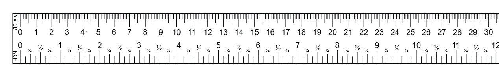
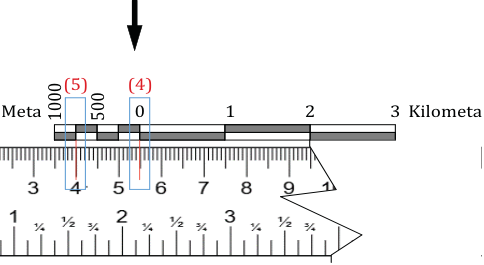

- Ikiwa alama nyekundu kwenye rula imeishia kwenye namba fulani katika skeli, namba hiyo inawakilisha umbali wa ardhi kati ya kituo A na B.
- Ikiwa alama nyekundu iko katikati ya namba mbili, rekodi namba ya kushoto na weka alama kwenye rula (3) kama inavyowasilishwa katika Kielelezo namba 11. Kwa mfano, namba ya kushoto katika Kielelezo namba 11 ni Km 2 hivyo, utairekodi;
- Hamisha rula kwenda upande wa kushoto wa skeli, alama ya kulia iwe sawa na sifuri (4) na alama ya kushoto iwe upande wa kushoto wa skeli ya mstari (5) kama inavyowasilishwa kwenye Kielelezo namba 11; na
- Andika namba iliyo karibu zaidi na alama nyekundu ya kushoto, kwa mfano, katika Kielelezo namba 11 namba itakayorekodiwa ni meta 750.
Hivyo, umbali wa ardhini kutoka pointi A hadi B ni Km 2 na Meta 750.


Kielelezo namba 11: Kubadilisha umbali wa ramani kuwa umbali wa ardhi wakati alama nyekundu ya kulia inayowakilisha kituo B iko kati ya namba mbili kwenye kipimo cha mstari.